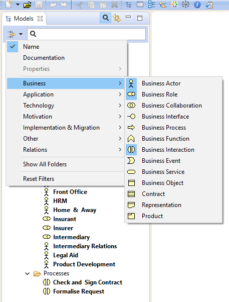
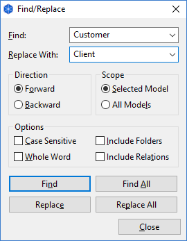

The number of objects in the Model Tree can grow quite considerably as you work on your model. Of course, you may wish to add sub-folders within the main folder structure to help organise these objects. However, finding a particular object in the tree may still prove to be difficult.
In order to search the Model Tree a Search Bar is included in Archi. This is accessed by clicking on the "Search" button on the toolbar of the Model Tree window. Clicking this button reveals the Search Bar:

Click here to open the Search Bar
As you type into the text field of the Search Bar the Model Tree updates to show only those objects that match the search criteria in the Search Bar. By default only the names of the objects are matched to the search string. You can also search on the "Documentation" field of the objects by selecting this in the "Filter Options" drop-down menu in the Search Bar:

Searching on both "Name" and "Documentation"
To clear the search text click on the icon to the right of the text. To clear these filters, deselect "Name" and/or "Documentation".
To filter certain types of ArchiMate concept you can select the types to include in the filter in the drop-down menu. You can select Specializations, Elements, Relations, and Views:
Filtering certain object types
To reset the object-type filter, select the "Reset Filters" menu item.
You can filter on the values of User Properties by selecting the "Property Value" drop-down menu item and adding some text in the text field.
To filter on selected User Properties, select the Property keys to include in the filter by clicking on the "Properties..." menu item and then select the required Property keys in the selection dialog:

Selecting User Property Keys
To filter Specializations of concepts you can select the Specializations to include in the filter in the drop-down menu in the same way as for Object Types. This will reveal all concepts that match the Specializations selected.
As you refine your search the Model Tree will only show those objects that match your search/filter criteria (or none at all if no objects match). Thus, folders with no matching child objects are not shown. If however you wish to show these empty folders as you search for objects (you may wish to drag and drop objects to other folders, for example) then you can set this as an option in the filter menu by selecting "Show All Folders".
Select this option to match case on the search text.
Select this option to match using regular expressions. If the regular expression is invalid the search text will show in red. Note that the syntax is Java based.
Selecting this menu item will clear all selections for Documentation, Properties, Specializations, Elements, Relations, and Views.
Selecting this menu item will refresh the Model Tree when changes to the model have occurred externally.
It is also possible to find and replace objects in the Model Tree by name.
Find and Replace dialog